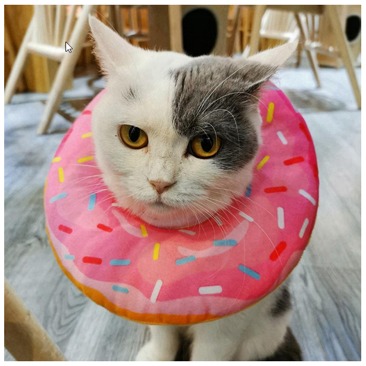

Toggle navigation
Index
First
Previous
Next
Last
Slide 13 of 27
Images: Informative examples
W3C
WAI
Informative image tutorial
Example 1: Cat with a colar than looks like a donut with sprinkles

Example 2: Cat with a colar that looks like a cone flower